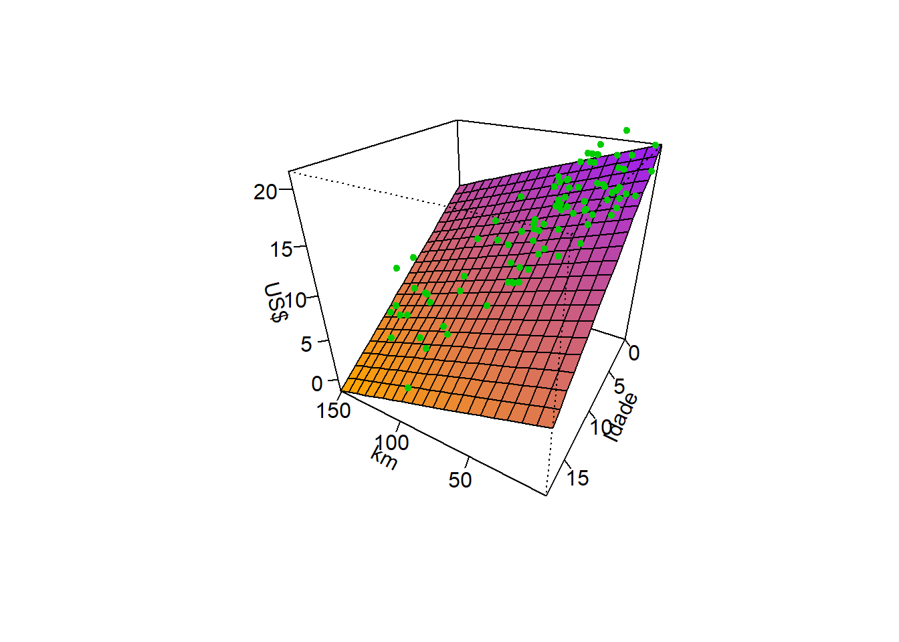

Regressão linear simples, múltipla e polinomial
Regressão linear simples, múltipla e polinomial
Regressão linear simples
Seja um problema onde deseja-se prever uma resposta contínua, \(y \in \mathbb{R}\), em função de uma única variável independente também contínua, \(x \in \mathbb{R}\). Conforme observado graficamente abaixo, pode-se considerar em diversos casos a aproximação de uma função linear para tal relação.
Tal aproximação pode ser descrita pela Equação à seguir, onde \(\hat{y}\) consiste no valor predito de \(y\), \(\beta_0\) e \(\beta_1\) são coeficientes chamados de intercepto ou constante e coeficiente linear ou inclinação, respectivamente. Enquanto \(\beta_0\) mede o valor da resposta prevista para \(x=0\), \(\beta_1\) consiste na mudança média da resposta para o incremento de uma unidade de \(x\).
\[ \hat{y} = \beta_0 + \beta_1x \]
A seguir pode-se observar para os dados plotados anteriormente a linha azual do modelo de regressão linear simples obtido.
Para este caso inicial os coeficientes de regressão estimados são:
(Intercept) x
10.927762 2.728817 A primeira pergunta a ser feita seria como estimar tais coeficientes de regressão. Pode-se pensar em estimativas que minimizem o erro de previsão. Conforme, plotado a seguir, o erro de previsão seria a diferença entre o valor experimental e o previsto, \(\varepsilon_i = y_i - \hat{y}_i\), \(i = 1, ...., N\).
Neste sentido, as observações da variável dependente ou resposta podem ser descritos conforme segue.
\[ \begin{aligned} y_i = \hat{y}_i + \varepsilon_i \\ y_i = \beta_0 + \beta_1x_i + \varepsilon_i \\ \end{aligned} \]
Tomando \(N\) observações retiradas da população de interesse, \((x_1, y_1), (x_2, y_2), ..., (x_N, y_N)\), pode-se pensar em um modelo que minimize os erros de previsão para a amostra disponível. Uma vez que o erro é normalmente distribuído, com média nula e variância \(\sigma_\varepsilon^2\), \(\varepsilon \sim N(0,\sigma_\varepsilon^2)\), pode-se trabalhar a minimização da soma dos quadrados dos erros de previsão, \(\sum_{i=1}^{N}\varepsilon_i^2\).
A seguir observam-se algumas das observações para os dados plotados anteriormente, bem como os valores preditos e erros associados.
| x | y | y_hat | erro |
|---|---|---|---|
| 1.093333 | 9.389117 | 13.91127 | -4.5221504 |
| 4.106335 | 29.785746 | 22.13320 | 7.6525477 |
| 9.138367 | 29.774229 | 35.86469 | -6.0904613 |
| 24.613730 | 78.467084 | 78.09412 | 0.3729679 |
| 38.963445 | 126.273606 | 117.25185 | 9.0217521 |
| 56.628047 | 155.103936 | 165.45531 | -10.3513755 |
A sintaxe anteriormente apresentada pode ser escrita de forma matricial, conforme segue, onde \(\mathbf{x}_{[2 \times N]}\) consiste em uma matriz relacionada às observações independentes, com uma coluna de valores unitários associada à \(\beta_0\) e outra com as observações de \(x\), portanto associada a \(\beta_1\). \(\mathbf{y}_{[N\times1]}\) consiste no vetor de observações da resposta, \(\mathbf{\varepsilon}_{[N\times1]}\) consiste no vetor de erros ou resíduos de previsão e \(\mathbf{\beta}_{[2\times1]}\) consiste em um vetor de coeficientes.
\[ \begin{aligned} \mathbf{y} = \mathbf{X}\mathbf{\beta} + \mathbf{\varepsilon} \end{aligned} \]
Tais elementos matriciais podem ser escritos de forma genérica conforme segue.
\[ \mathbf{X} = \begin{bmatrix} 1 & x_{1}\\ 1 & x_{2}\\ \vdots & \vdots \\ 1 & x_{N}\\ \end{bmatrix} \\ \]
\[ \mathbf{y} = \begin{bmatrix} y_{11}\\ y_{11}\\ \vdots \\ y_{1N}\\ \end{bmatrix} \\ \]
\[ \mathbf{\varepsilon} = \begin{bmatrix} \varepsilon_{11}\\ \varepsilon_{11}\\ \vdots \\ \varepsilon_{1N}\\ \end{bmatrix}, e \\ \]
\[ \mathbf{\beta}^T = \begin{bmatrix} \beta_0 & \beta_1\\ \end{bmatrix} \\ \]
Tomando tal notação, a soma dos quadrados dos erros pode ser descrita como \(\sum_{i=1}^{N}\varepsilon_i^2 = \mathbf{\varepsilon}^T\mathbf{\varepsilon}\). Desenvolvendo tal expressão tem-se:
\[ \begin{aligned} L(\mathbf{\beta}) = \mathbf{\varepsilon}^T\mathbf{\varepsilon} = (\mathbf{y} - \mathbf{X}\mathbf{\beta})^T(\mathbf{y} - \mathbf{X}\mathbf{\beta}) \\ \mathbf{y}^T\mathbf{y} - 2\mathbf{\beta}^T\mathbf{X}^T\mathbf{y} + \mathbf{\beta}^T\mathbf{X}^T\mathbf{X}\mathbf{\beta} \end{aligned} \] Para minimizar \(L\) em relação à estimativa de \(\mathbf{\beta}\), pode-se diferenciar tal quantidade em relação à \(\mathbf{\beta}\) e igualar a zero:
\[ \begin{aligned} \frac{\partial L}{\partial \mathbf{\beta}} = -2\mathbf{X}^T\mathbf{y} + 2\mathbf{\beta}^T\mathbf{X}^T\mathbf{X} = 0 \\ \hat{\mathbf{\beta}} = (\mathbf{X}^T\mathbf{X})^{-1}(\mathbf{X}^T\mathbf{y}) \end{aligned} \]
Tal solução constitui as chamadas equações normais de mínimos quadrados.
Ao obter um modelo de regressão é sempre importante observar os resíduos, os quais devem ser normalmente distribuídos, independentes e homocedásticos.
Regressão linear múltipla
No caso de onde há múltiplas variáveis independentes ou regressoras de interesse, \(x_1, x_2, ..., x_k\) pode-se considerar o modelo com um coeficiente linear associado a cada variável, isto é:
\[ \hat{y}_i = \beta_0 + \beta_1x_{i1} + \beta_2x_{i2} + \cdots + \beta_kx_{ik} = \beta_0 + \sum_{j=1}^{k}\beta_jx_{ij}, \]
ou de forma matricial com \(\mathbf{X}_{[N\times k+1]}\) e \(\mathbf{\beta}_{[k+1 \times 1]}\):
\[ \begin{aligned} \hat{\mathbf{y}} = \mathbf{X}\mathbf{\beta} \end{aligned}, \] com:
\[ \mathbf{X} = \begin{bmatrix} 1 & x_{11} & x_{21} & \cdots & x_{k1}\\ 1 & x_{12} & x_{22} & \cdots & x_{k2} \\ \vdots & \vdots & \vdots & \ddots & \vdots\\ 1 & x_{1N} & x_{2N} & \cdots & x_{kN} \\ \end{bmatrix} e\\ \]
\[ \mathbf{\beta}^T = \begin{bmatrix} \beta_0 & \beta_1 & \cdots & \beta_k\\ \end{bmatrix}. \\ \]
As estimativas de mínimos quadrados, deduzidas para o caso simples, \(\hat{\mathbf{\beta}} = (\mathbf{X}^T\mathbf{X})^{-1}(\mathbf{X}^T\mathbf{y})\), também atendem ao caso múltiplo. Uma forma de medir o ajuste do modelo obtido aos dados seria a partir do cálculo do coeficiente de determinação múltipla, \(R^2\), conforme segue,
\[ \begin{align} R^2 = 1- SS_{E}/SS_T \\ R^2 = 1- \frac{\sum_{i=1}^{N}(y_i-\hat{y}_i)^2}{\sum_{i=1}^{N}(y_i-\overline{y}_i)^2}, \end{align} \]
ou utilizando a média dos quadrados dos erros, \(MS_E\), ou outra métrica de erro.
\[ \begin{align} MS_E = SS_E/N \\ MS_E = \frac{\sum_{i=1}^{N}(y_i-\hat{y}_i)^2}{N} \\ \end{align} \]
É interessante que tais métricas sejam também calculadas para dados futuros ou de teste, de forma a evitar sobreajuste do modelo. Uma observação importante é relacionada à utilização da ANOVA para obtenção de tais métricas. O \(MS_E\) da ANOVA relacionado aos dados de treinamento do modelo tem no denominador \(N-k\), sendo, portanto, o número de graus de liberdade disponíveis para calcular o erro. Além do \(R^2\), para os dados de treinamento, ao se utilizar a ANOVA, há a possibilidade de calcular o coeficiente de determinação ajustado, \(R^2_{adj}\), isto é:
\[ R^2_{adj} = 1 - \frac{SS_{E}/(N-k)}{SS_T/(N-1)}. \]
Esta métrica é mais honesta uma vez que penaliza o modelo pela adição de mais coeficientes. O \(R^2\) sempre aumentará com adição de novos coeficientes, enquanto o \(R^2_{adj}\) será mais baixo casos novos termos adicionados não apresentem significância estatística. Entretanto, no contexto de aprendizado supervisionado é mais interessante realizar a validação cruzada e ver o desempenho do modelo em dados futuros. Isto será realizado nas aulas práticas.
O teste t para os coeficientes de regressão pode ser calculado para medir a significância de cada coeficiente e testar as seguintes hipóteses para cada coeficiente de regressão.
\[ H_0: \beta_j = 0\\ H_1: \beta_j \neq 0, j = 1, ..., k\\ \]
O teste é calculado conforme segue, onde \(C_j\) é o valor da \(j\)-ésima linha e \(j\)-ésima coluna da matriz \((X^T)^{-1}\), correspondente a \(\beta_j\). A hipótese nula é rejeitada se \(t_{0j} > t_{[\alpha/2,N-k]}\), onde \(\alpha\) é o nível de significância de interesse.
\[ t_{0j} = \frac{\hat{\beta}_j}{\sqrt{C_jSS_E/(N-k)}} \]
Analogamente, estimativas intervalares para os coeficientes podem ser obtidas como segue, as quais consistem em intervalos que garantem \(\gamma = 1-\alpha\) de confiança de encontrar os verdadeiros valores dos coeficientes de regressão.
\[ \hat{\beta}_j \pm t_{[\alpha/2,N-k]}\sqrt{C_jSS_E/(N-k)} \]
A seguir ilustra-se graficamente um modelo de regressão linear múltipla para prever o preço de carros usados em função da idade e quilometragem.

Para este caso, os coeficientes estimados são apresentados a seguir.
(Intercept) Mileage Age
21.54307990 -0.05314626 -0.84234949 O modelo pode ser escrito conforme segue.
\[ \hat{y} = 21,543 - 0,0531x_1 - 0,842x_2 \]
O teste t para os coeficientes de regressão resultante é apresentado a seguir. Como \(|t_{\alpha/2,N-k}|\) = 1.987, tem-se que todos os coeficientes são significativos, uma vez que \(t_{0j} > t_{\alpha/2,N-k}\), \(\forall j = 1, ..., k\). Pode-se também considerar o \(p-value\) que é a probabilidade de erro na rejeição da hipótese nula, \(H_0\), associada ao valor calculado \(t_0\). Se \(p-value < \alpha\), rejeita-se \(H_0\).
Call:
lm(formula = Price ~ Mileage + Age, data = ThreeCars2017)
Residuals:
Min 1Q Median 3Q Max
-5.5429 -1.2795 -0.2982 1.5275 7.1967
Coefficients:
Estimate Std. Error t value Pr(>|t|)
(Intercept) 21.54308 0.47737 45.129 < 2e-16 ***
Mileage -0.05315 0.01207 -4.404 3.02e-05 ***
Age -0.84235 0.11187 -7.530 4.42e-11 ***
---
Signif. codes: 0 '***' 0.001 '**' 0.01 '*' 0.05 '.' 0.1 ' ' 1
Residual standard error: 2.356 on 87 degrees of freedom
Multiple R-squared: 0.8239, Adjusted R-squared: 0.8198
F-statistic: 203.5 on 2 and 87 DF, p-value: < 2.2e-16A seguir apresentam-se intervalos de confiança de 0.95 para os coeficientes.
| 2.5 % | 97.5 % | |
|---|---|---|
| (Intercept) | 20.5942640 | 22.4918958 |
| Mileage | -0.0771341 | -0.0291584 |
| Age | -1.0646960 | -0.6200030 |
Além de considerar termos de múltiplas variáveis é possível considerar a interação entre estas, colocando na matriz \(\mathbf{X}\) colunas com multiplicação ou produto de colunas das variáveis de interesse e no modelo termos da forma \(\beta_{ij}x_ix_j\) Para o caso em estudo um modelo de regressão múltipla com interação ficaria conforme segue.
Call:
lm(formula = Price ~ Mileage * Age, data = ThreeCars2017)
Residuals:
Min 1Q Median 3Q Max
-5.1277 -1.4495 -0.2671 1.7765 6.1130
Coefficients:
Estimate Std. Error t value Pr(>|t|)
(Intercept) 23.710878 0.855627 27.712 < 2e-16 ***
Mileage -0.091109 0.017144 -5.314 8.32e-07 ***
Age -1.322828 0.192804 -6.861 9.95e-10 ***
Mileage:Age 0.006151 0.002053 2.997 0.00357 **
---
Signif. codes: 0 '***' 0.001 '**' 0.01 '*' 0.05 '.' 0.1 ' ' 1
Residual standard error: 2.255 on 86 degrees of freedom
Multiple R-squared: 0.8405, Adjusted R-squared: 0.835
F-statistic: 151.1 on 3 and 86 DF, p-value: < 2.2e-16Codificação de variáveis categóricas em regressão múltipla
Retomando o problema de regressão do preço de revenda de carros considerando o ano e a quilometragem, imagine uma terceira variável regressora que determina o modelo ou tipo do veículo. Tal variável apresenta três categorias, Mazda6, Accord e Maxima.
| CarType | Age | Mileage | Price | |
|---|---|---|---|---|
| 1 | Mazda6 | 3 | 17.8 | 15.9 |
| 2 | Mazda6 | 2 | 19.0 | 16.4 |
| 50 | Accord | 10 | 150.5 | 7.9 |
| 51 | Accord | 5 | 65.2 | 11.7 |
| 70 | Maxima | 1 | 38.6 | 20.0 |
| 71 | Maxima | 1 | 42.1 | 20.0 |
Para trabalhar com a variável modelo e qualquer outra variável qualitativa ou categórica em regressão múltipla, pode-se utilizar de variáveis dummy também conhecidas como indicativas ou binárias. No caso de três categorias, como no exemplo acima, duas variáveis dummy seriam suficientes. Observe a seguir que ao criar uma coluna denominada Mazda6, com 1, se Mazda6 e 0, caso contrário e, de forma análoga, uma coluna para Accord, caso uma determinada observação receba 0 em ambas colunas, o modelo do carro consiste no Maxima.
| Mazda6 | Accord | |
|---|---|---|
| 1 | 1 | 0 |
| 2 | 1 | 0 |
| 50 | 0 | 1 |
| 51 | 0 | 1 |
| 70 | 0 | 0 |
| 71 | 0 | 0 |
O modelo com estas variáveis e as duas consideradas anteriormente ficaria conforme exposto a seguir.
Call:
lm(formula = Price ~ Mileage + Age + Mazda6 + Accord, data = ThreeCars2017)
Residuals:
Min 1Q Median 3Q Max
-4.588 -1.632 -0.178 1.196 6.861
Coefficients:
Estimate Std. Error t value Pr(>|t|)
(Intercept) 22.14907 0.54666 40.517 < 2e-16 ***
Mileage -0.05198 0.01158 -4.490 2.23e-05 ***
Age -0.81720 0.10799 -7.567 4.17e-11 ***
Mazda6 -2.11582 0.57501 -3.680 0.000409 ***
Accord -0.32571 0.58733 -0.555 0.580651
---
Signif. codes: 0 '***' 0.001 '**' 0.01 '*' 0.05 '.' 0.1 ' ' 1
Residual standard error: 2.187 on 85 degrees of freedom
Multiple R-squared: 0.8517, Adjusted R-squared: 0.8447
F-statistic: 122 on 4 and 85 DF, p-value: < 2.2e-16Regressão polinomial
É possível em regressão simples ou múltipla realizar transformações nos preditores de forma a incluir termos polinomiais associados à uma ou mais variáveis independentes. Para o caso simples, um modelo de regressão polinomial pode ser escrito conforme segue, onde \(p\) é a ordem do modelo de regressão polinomial.
\[ \hat{y} = \beta_0 + \beta_1x + \beta_2x^2 + \beta_3x^3 + ... \beta_px^p \]
Considerando a notação matricial, a matriz \(\mathbf{X}\) fica conforme segue, podendo-se utilizar novamente as equações normais de mínimos quadrados para estimar os coeficientes, \(\hat{\mathbf{\beta}} = (\mathbf{X}^T\mathbf{X})^{-1}(\mathbf{X}^T\mathbf{y})\).
\[ \mathbf{X} = \begin{bmatrix} 1 & x_{11} & x_{11}^2 & \cdots & x_{p1}^p\\ 1 & x_{12} & x_{12}^2 & \cdots & x_{p2}^p \\ \vdots & \vdots & \vdots & \ddots & \vdots\\ 1 & x_{1N} & x_{1N}^2 & \cdots & x_{pN}^p \\ \end{bmatrix}\\ \]
Sejam os dados da massa de um paciente em kg medidos ao longo de 8 meses de um programa de perda de peso.
Considerando um modelo linear para tais dados, os resíduos obtidos ão plotados conforme segue. Pode-se observar claramente um padrão de não linearidade nos resíduos em relação aos valores ajustados, indicando o ajuste de um modelo não linear.
Pode-se pensar, portanto, em um modelo de regressão quadrático para aproximar o peso em função de dias. A curva plotada a seguir consiste em tal modelo.

O modelo quadrático obtido e associado ao gráfico anterior é exposto a seguir.
Call:
lm(formula = Weight ~ Days + I(Days^2), data = rehab)
Residuals:
Min 1Q Median 3Q Max
-1.9034 -0.5842 -0.1188 0.4774 2.6315
Coefficients:
Estimate Std. Error t value Pr(>|t|)
(Intercept) 1.833e+02 3.521e-01 520.72 <2e-16 ***
Days -4.565e-01 6.520e-03 -70.03 <2e-16 ***
I(Days^2) 6.930e-04 2.614e-05 26.51 <2e-16 ***
---
Signif. codes: 0 '***' 0.001 '**' 0.01 '*' 0.05 '.' 0.1 ' ' 1
Residual standard error: 0.9386 on 49 degrees of freedom
Multiple R-squared: 0.9981, Adjusted R-squared: 0.998
F-statistic: 1.287e+04 on 2 and 49 DF, p-value: < 2.2e-16Os resíduos para os modelos quadráticos são plotados abaixo.

Finalmente, tal modelo estimado pode ser escrito conforme segue.
\[ \hat{y} = 183,3 -0,456x + 6,930\times10^{-4}x^2 \]